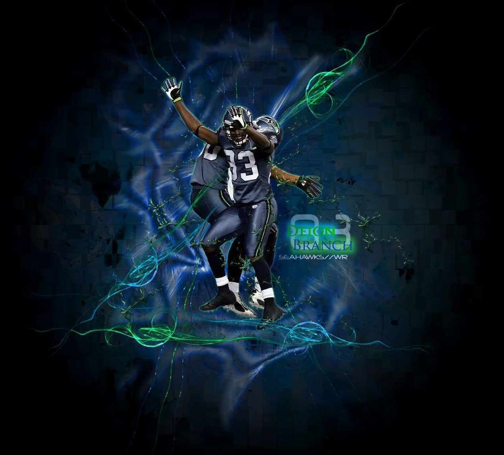

Seattle Seahawks
Os Seattle Seahawks são uma equipe profissional de futebol americano, competindo na National Football League (NFL), com sede em Seattle, Washington e tendo como casa o estádio Lumen Field. Eles venceram o Super Bowl pela primeira vez na temporada de 2013, quando derrotaram o Denver Broncos no Super Bowl XLVIII. A equipe é conhecida por ter uma base de fãs entusiástica, apelidada de "12th Man" (Décimo Segundo Homem), representando a importância do apoio dos torcedores durante os jogos.
